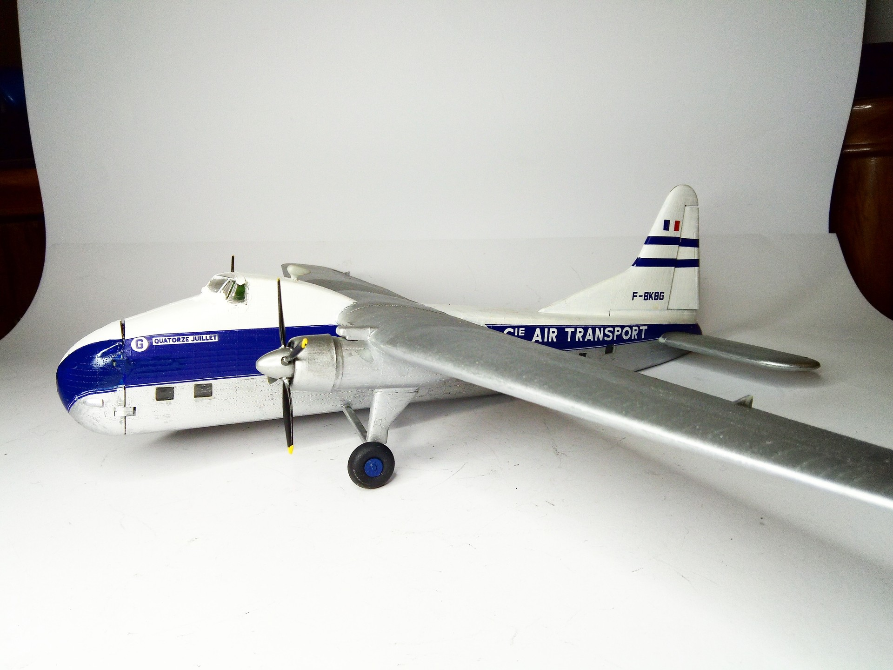
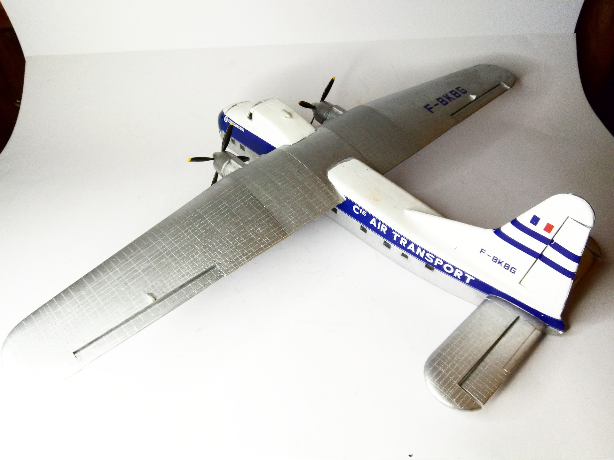

Aerei · scale model archive
Bristol 170 Superfreighter
Bristol 170 Superfreighter — Kit: Airfix, Scale: 1/72. My first kit memory, but I unfortunately played with-and destroyed- the first one #1/72 #Airfix…

Photo gallery

English description
My first kit memory, but I unfortunately played with-and destroyed- the first one
#1/72 #Airfix #Bristol #Superfreighter
Descrizione italiana
Il mio primo ricordo di un kit, ma purtroppo con il primo esemplare ci giocai e lo distrussi.